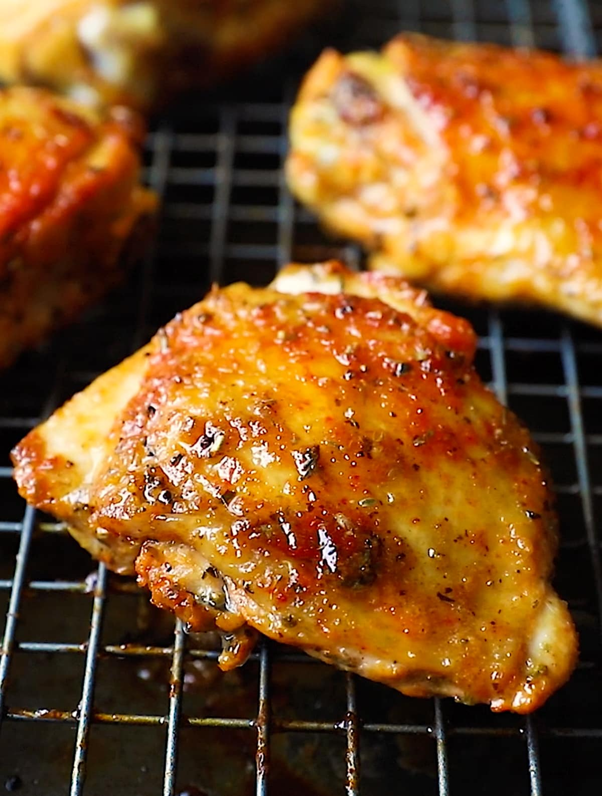

Baked Chicken

Description
Savor a baked chicken recipe featuring succulent, skin-on, bone-in chicken thighs seasoned to perfection with salt, ground black pepper, and a touch of garlic powder. This simple yet delicious dish offers crispy, flavorful skin and tender, juicy meat for a satisfying meal.
Ingredients
- 6 Skin-on, bone-in chicken thighs
- Salt and ground black pepper to taste
- 1 Pinch garlic powder, or to taste
Steps
- Preheat oven to 475 degrees F (245 degrees C). Set a wire rack inside a broiler pan or baking pan.
- Pat chicken thighs dry with paper towels. Lift up skin gently; sprinkle salt, pepper, and garlic powder under the skin. Replace skin. Season skin and underside of the thighs with salt, pepper, and garlic powder.
- Arrange on the rack
- Roast in the preheated oven until golden, about 20 minutes. Reduce oven temperature to 400 degrees F (200 degrees C). Continue roasting until juices run clear, about 30 minutes more. Let rest for 5 minutes before serving.
- Serve hot and enjoy!